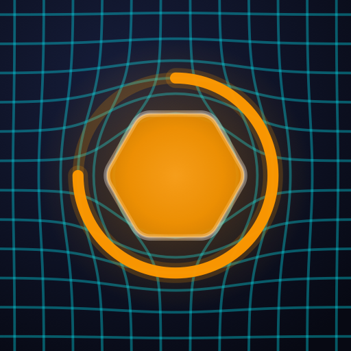

Tokkon Connect
Abre Tokkon para unirte a esta sala. Si aún no la tienes, descárgala gratis y vuelve a escanear el QR.
Open Tokkon to join this room. If you don’t have it yet, get it for free and scan the QR again.
Abrir en TokkonOpen in Tokkon Descargar en Google PlayGet it on Google Play